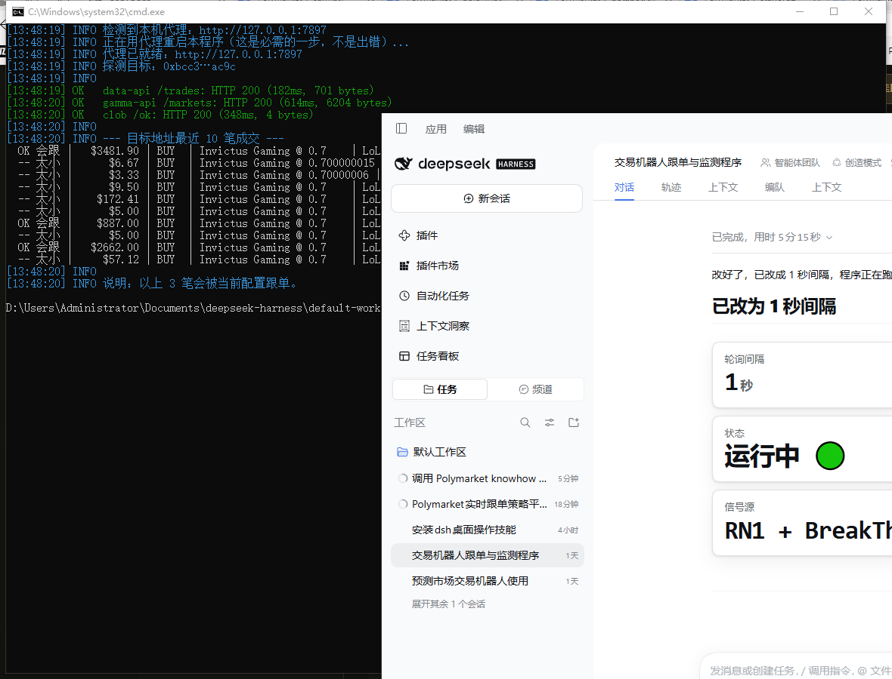
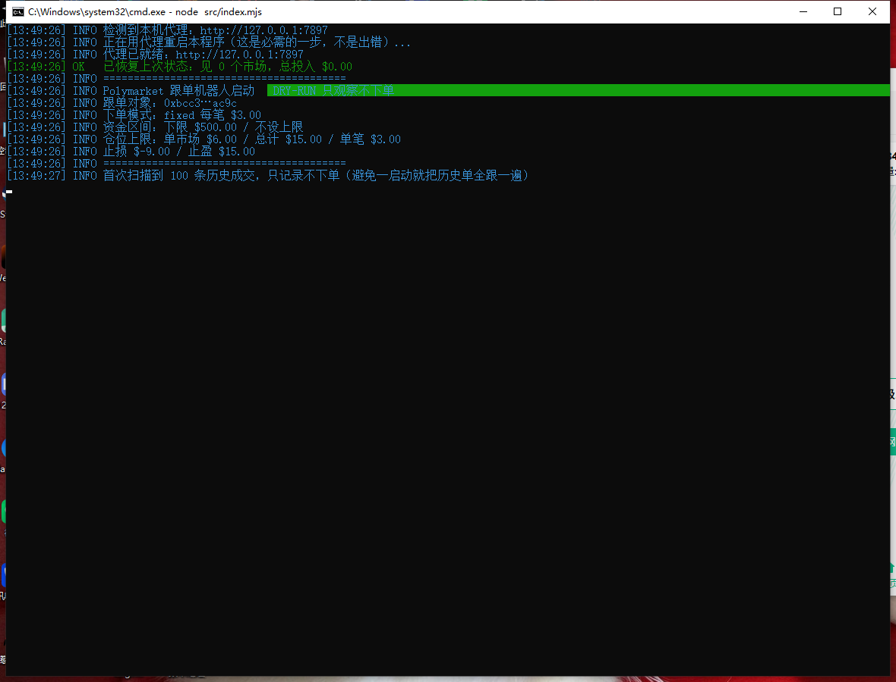
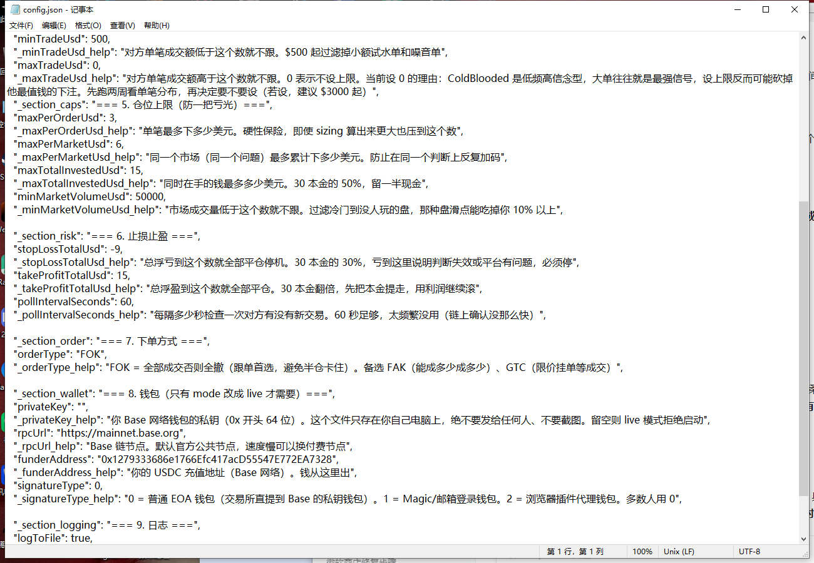

本金 30 USDC · 跟单对象 ColdBlooded · 最新版（已修复 npm 脚本名错误）
1-检测网络.bat 看到三个 HTTP 200 → 双击 2-开始监控.bat → 黑窗口保持开着别关。打开这个文件夹（复制下面路径粘贴到「此电脑」地址栏回车即可）：
D:\Users\Administrator\Documents\deepseek-harness\default-workspace\.dsh-switchman\probe-npm
里面你会看到这些文件：
| 文件 | 它是干嘛的 | 你要动它吗 |
|---|---|---|
1-检测网络.bat | 测网络通不通（只读，绝对安全） | 要双击 |
2-开始监控.bat | 开始跟单监控（dry-run，只打印不下单） | 要双击 |
config.json | 所有参数都在这里 | 要用记事本改 |
README.md | 纯文字完整说明 | 不看也行 |
src\ scripts\ | 程序代码 | 别动 |
logs\ | 每次运行的日志自动存这里 | 可以翻 |
1-检测网络.bat 里写的是 npm run probe:proxy，但 package.json 里根本没有这个名字。
结果 npm 没有跑脚本，反而弹了一个「选择 npm run probe:proxy」的交互式选择框让你手动选——
很多人以为程序卡住了或网络坏了，其实是这个原因。已改成正确的 npm run probe，现在双击直接跑。
1-检测网络.bat，双击它。
| 屏幕上的文字 | 什么意思 |
|---|---|
检测到本机代理：http://127.0.0.1:7897 | 程序自动找到了你电脑上的「梯子」端口。不用你做任何事 |
正在用代理重启本程序（这是必需的一步，不是出错）... | 正常！Node.js 只在程序启动的那一瞬间读代理配置，所以程序必须「重启自己」一次才能生效。这不是报错，看到就对了 |
代理已就绪：http://127.0.0.1:7897 | 重启完成，代理生效 |
OK data-api /trades: HTTP 200 (182ms, 701 bytes) | 通成交记录接口。200 = 成功，182ms = 响应速度 |
OK gamma-api /markets: HTTP 200 (614ms, 6204 bytes) | 通市场信息接口 |
OK clob /ok: HTTP 200 (343ms, 4 bytes) | 通交易引擎接口 |
图片下半部分的 --- 目标地址最近 10 笔成交 --- 是在告诉你：对方的哪些单会被跟。
| 行首标记 | 含义 |
|---|---|
OK 会跟 | 金额 ≥ 你设的下限 $500 → 会复制 |
-- 大小 | 金额太小 → 跳过（过滤噪音单） |
minMarketVolumeUsd = 50000，
所以在真正的监控里还是会被成交量过滤器挡掉。这是「宁缺毋滥」的正常表现——不是坏了。
2-开始监控.bat。
| 屏幕上的文字 | 意思 |
|---|---|
Polymarket 跟单机器人启动 DRY-RUN 只观察不下单 | 安全模式只会打印，绝不下单、绝不花钱 |
跟单对象: 0xbcc3...ac9c | ColdBlooded（胜率 69%，盈亏比 1.79） |
下单模式: fixed 每笔 $3.00 | 每笔固定跟 $3，30 本金最多跟 10 笔 |
资金区间: 下限 $500.00 / 不设上限 | 对方单笔 < $500 不跟；大单不限 |
仓位上限: 单市场 $6.00 / 总计 $15.00 / 单笔 $3.00 | 三道保险，防止一把亏光 |
止损 $-9.00 / 止盈 $15.00 | 总浮亏到 -$9 停机；总浮盈到 +$15 平仓 |
首次扫描到 100 条历史成交，只记录不下单 | 关键防止一启动就把对方过去 100 笔全跟一遍 |
Ctrl + C，程序会自动保存状态。启动之后，每 60 秒会刷新一轮。你主要会看到这些输出：
| 输出 | 含义 | 你要做什么 |
|---|---|---|
[时间] INFO 第 N 轮 · 无新交易 | 对方这分钟没动作 | 什么都不用做 |
OK 会跟 $XXX BUY xxx @ 0.7 | 发现一笔值得跟的单 | 记下来，观察后续 |
-- 大小 | 金额太小，跳过 | 正常 |
-- 冷门 | 市场成交量不足，跳过 | 正常 |
-- 超限 | 已触达单市场/总仓位上限 | 正常，说明保险在起作用 |
[DRY-RUN] 跳过下单 | 模拟完成，未真实下单 | 正常 |
config.json 上右键 → 打开方式 → 记事本。
| 字段 | 当前值 | 作用 | 什么时候改 |
|---|---|---|---|
mode | dry-run | dry-run=只看不买；live=真下单 | 两周后才考虑改 |
targetWallet | 0xbcc3…ac9c | 跟谁 | 换跟单对象时 |
minTradeUsd | 500 | 对方单笔低于此值不跟 | 想更保守→调高；想多跟→调低 |
maxTradeUsd | 0 | 对方单笔高于此值不跟（0=不限） | 目前不建议改，见下方说明 |
fixedOrderSizeUsd | 3 | 每笔跟多少美元 | 本金变多时调高 |
minMarketVolumeUsd | 50000 | 市场成交量低于此值不跟 | 觉得太保守可降到 20000 |
maxTotalInvestedUsd | 15 | 同时在手最多多少钱 | 本金变多时调高 |
privateKey | 空 | 你的钱包私钥 | 只有上 live 才填，且绝不外传 |
$3000 起。
Ctrl + S 保存| 你看到的现象 | 原因 | 怎么办 |
|---|---|---|
| 弹出「选择 npm run probe:proxy」窗口让你选 | 旧版 bat 的脚本名错误 | 已修复重新拉最新文件；若还出现，直接关掉窗口，改用命令行 node scripts/probe.mjs |
fetch failed / UND_ERR_CONNECT_TIMEOUT | 梯子没开，或端口不是 7897 | ① 确认梯子已开 ② 浏览器打开 polymarket.com 确认能上 ③ 若你的梯子端口不是 7897，程序会依次探测 7890/10809/10808/1080/8080 等常见端口；仍失败就去梯子设置里查端口，告诉我 |
| 一直卡在「正在用代理重启本程序」 | 代理连上了但目标域名被墙或梯子规则拦截 | 换梯子节点 / 确认梯子允许 polymarket.com |
npm 不是内部或外部命令 | 没装 Node.js | 去 nodejs.org 下载 LTS 版安装，一路下一步，装完重开电脑 |
| 黑窗口一闪就消失 | bat 路径含中文或权限问题 | 用命令行进入该目录再运行（见下方） |
| 超过 3 分钟没新输出 | 网络断了或程序卡住 | Ctrl+C 停掉，重跑 1-检测网络.bat |
| 所有单都被「-- 冷门」跳过 | minMarketVolumeUsd=50000 太严 | 改到 20000，重启生效 |
按 Win + R，输入 cmd 回车，然后粘贴下面两行（每行回车）：
cd /d "D:\Users\Administrator\Documents\deepseek-harness\default-workspace\.dsh-switchman\probe-npm" node scripts/probe.mjs
确认网络 OK 后，再运行监控：
node src/index.mjs
0x1279333686e1766Efc417acD55547E772EA7328 转 30 USDC，必须是 Base 网络。config.json，填 privateKey，把 mode 改成 live，保存。2-开始监控.bat。这次会真下单。
本手册所有截图均于 2026-10-24 在本机实际运行截取，非示意图。
配套纯文字版：项目文件夹内的 README.md